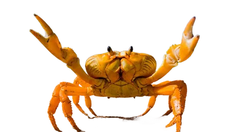

Imágenes a distintas dimensiones
En esta sección se muestran imágenes con diferentes dimensiones y formatos. Algunas imágenes están optimizadas para la web, mientras que otras son de mayor resolución.
Las imágenes pueden estar en distintos formatos, como PNG, JPEG, WebP y AVIF. Cada formato tiene sus ventajas y desventajas en términos de calidad, tamaño de archivo y compatibilidad con navegadores.
Imágenes con diferentes formatos
Las imágenes pueden estar en distintos formatos, en tamaño original.
Imágen pequeña
Esta imagen es un ejemplo de una imagen pequeña en formato WEBP. Es ideal para su uso en sitios web donde se requiere una carga rápida y un tamaño de archivo reducido.

Imágenes como enlace
Las imágenes también pueden funcionar como enlaces a otros sitios web. Al hacer clic en la imagen, el usuario será redirigido al sitio web correspondiente.